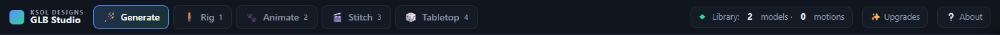
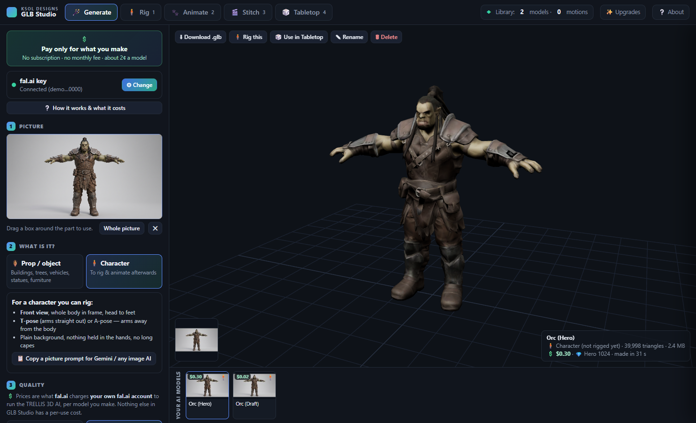
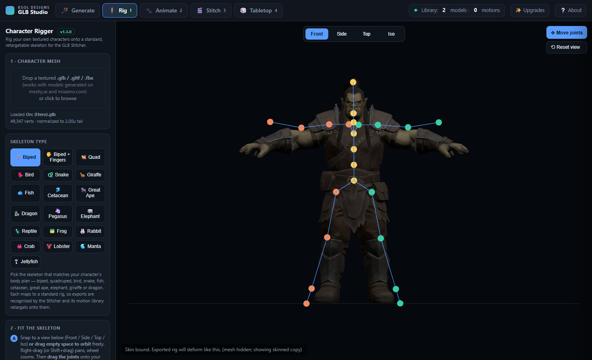
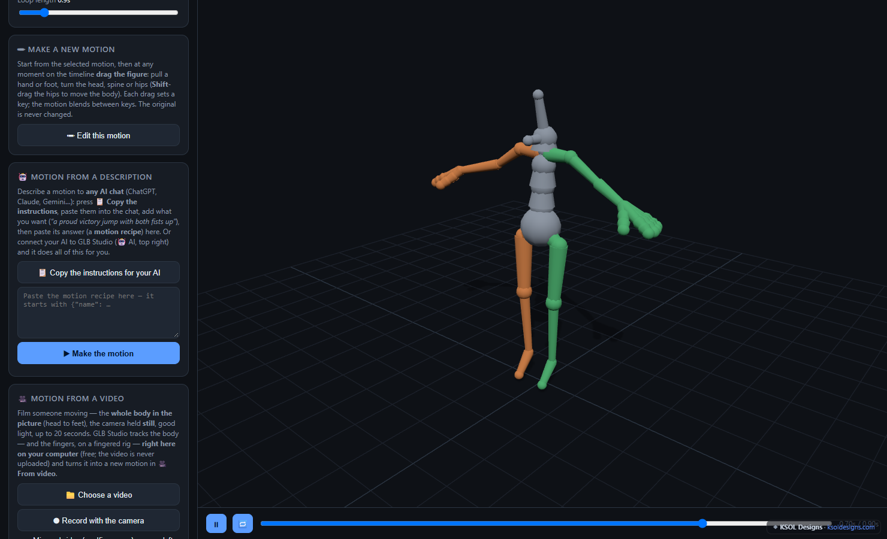
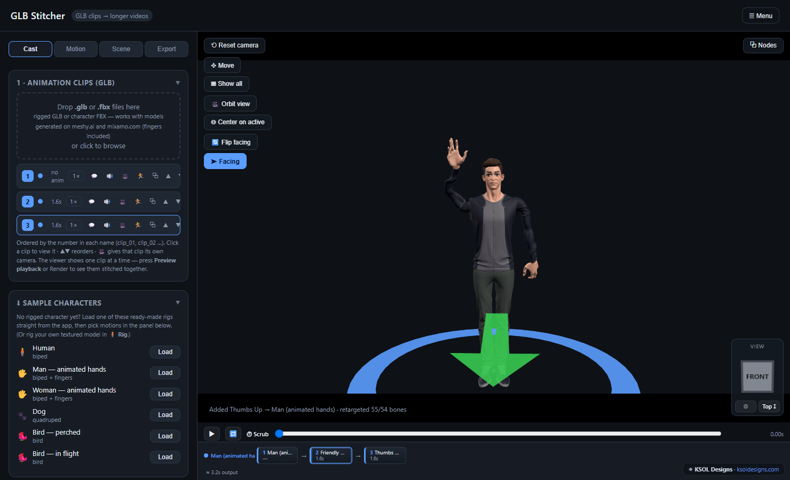
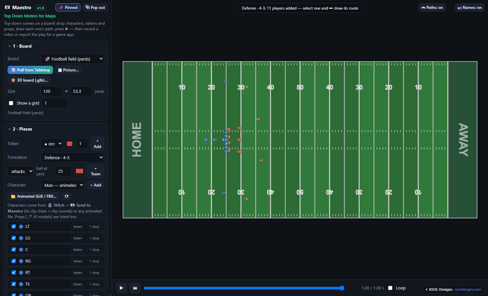
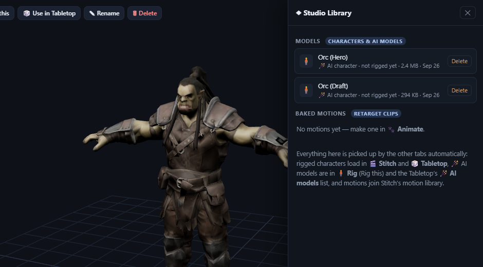

Picture → 3D → rig & animate → film it or play it on the Tabletop
◆ Library: 0 models · 0 motions
● 🤖 AI
✨ Upgrades
🆕 New version — reload
⟳ Restart tab
❔ About
◆ KSOL Designs GLB Studio — how it works
Generate → Rig → Animate → Stitch → Tabletop → Maestro, with one shared library
✕ Close
Everything a game creator needs to make the characters, boards, cards, boxes, videos and the app, in one place, in your browser.
GLB Studio takes you from a picture or a 3D model all the way to a rigged, animated character, finished videos, print-ready boards, cards and boxes, 3D-printable minis, and a playable app. Each tab hands its work to the next through a shared Studio Library, so there are no files to shuffle between steps.

The top menu: 🪄 Generate · 🧍 Rig · 🐾 Animate · 🎬 Stitch · 🎲 Tabletop · 🎼 Maestro. On the right, ◆ Library shows what's shared, 🤖 AI connects your own AI assistant, ✨ Upgrades unlocks add-ons and packs, and ❔ About opens this guide.
📘 The full manual: every tab step by step, with pictures (18 pages, PDF).⬇ Download the manual
Quick start: make or drop in a character → 🧍 Rig it → pick motions in 🎬 Stitch and render an MP4, or put it on a board in 🎲 Tabletop and play. No model yet? Stitch has free sample characters, or make one from a picture with 🪄 Generate.
✦ 🪄 Generate: turn a picture into a 3D model add-on
💲 Pay only for what you make · no subscription, no monthly fee · about 2¢ per Draft model
Drop, paste or crop a picture, choose 🏺 Prop (buildings, trees, vehicles, statues) or 🧍 Character (to rig and animate), then choose the quality:
⚡ Draft (about 2¢): good shape with softer paint, a quick check of a picture.
⚖ Standard (about 2¢): clean paint all over and more detail. Best for game pieces and big, bulky characters.
💎 Hero (about 25–35¢): sharp detail and textures, for close-ups, films and showpieces.
Try a new picture on ⚖ Standard first. If the shape and hands look right, press 💎 Happy with it? Make it in Hero. After every character, GLB Studio checks the hands for you (free, on your computer) and warns you if the AI added a finger or tore a hand. 👀 Look at the hands shows them close up. The AI gets hands wrong most often, so picture tips come first: open hands with the fingers spread, and nothing hanging behind the character (long braids, ropes, capes). The tab has a 🧹 clean-up prompt to fix a picture you already have.
Press Generate. The model is shrunk to game size, saved to the Studio Library, and can go straight to 🧍 Rig this or 🎲 Use in Tabletop. For a character you can rig, use a front-view T-pose picture; the tab has a ready-made prompt to copy into Gemini or any picture AI.

Generate: picture on the left, the 3D model on the right, what it cost, and your AI models along the bottom.
💲 Where the cost comes from: the models are made by TRELLIS (an image-to-3D AI by Microsoft) running on fal.ai. fal.ai charges your own fal.ai account for each model you make, using the key you set up in the tab's ⚙ Set up (about 2 minutes: sign up, add a little credit, create a key, paste it). KSOL Designs receives none of that money and adds nothing on top. You always see the price before you click, and 💲 Your costs keeps a running total and history. The add-on itself is a separate one-time purchase that unlocks the tab. This is the only part of GLB Studio with a per-use cost.
1 🧍 Rig: give a model a skeleton
Drop a textured .glb, .gltf or .fbx (works with models generated on meshy.ai and mixamo.com), or press 🧍 Rig this in Generate. Pick the skeleton type. There are 19: biped, biped + fingers, quadruped, bird, snake, fish, whale/dolphin, great ape, dragon, pegasus, elephant, giraffe, reptile, frog, rabbit, crab, lobster, manta ray and jellyfish. The skeleton fits itself to the model; drag any joint to fine-tune it (🪞 Symmetric copies each change to the other side). Click Bind & preview weights to check the skin, then ⬇ Export rigged GLB. The export downloads and goes into the Studio Library.

Rig: a Generate-made orc, fitted to the biped skeleton automatically and bound, ready to export.
2 🐾 Animate: make motions
Choose the rig type, pick a motion (walks, runs, jumps, sports, dances, gestures, wing flaps and more), and tune its speed, amplitude and loop length. When it looks right, click ➕ Add current animation → Studio Library. It joins Stitch's motion list for that skeleton.
Three ways to make your own motions (they appear in the list under their own headings and are saved on your computer):
✏ Edit this motion: start from any motion, scrub to a moment and drag the figure (pull a hand or foot, turn the head or body). Each drag sets a key. 💾 Save as a new motion; the original is never changed.
🎥 Motion from a video (people): choose a video or ⏺ record with the camera (whole body in the picture, camera still, up to 20 seconds). The body, and the fingers on a fingered rig, are tracked right on your computer (the video is never uploaded) and become a new motion. One camera has to guess depth, so check it from the side, and touch it up with ✏ if needed.
🤖 Motion from a description (people): 📋 Copy the instructions into any AI chat (ChatGPT, Claude, Gemini…), say what you want ("a proud victory jump with both fists up"), paste its answer back and press ▶ Make the motion. Or connect your AI (below) and it does all of this for you.

Animate: pick a rig and a motion, tune it and ➕ Add it to the library, or make your own with ✏ Edit, 🤖 a description or 🎥 a video.
3 🎬 Stitch: make the video
Load a rigged character from the ◆ Studio Library card (or a free sample). Motions for its skeleton appear in the Motion library; click one to add it as a clip, and it's retargeted onto your character automatically. Then set the scene, props, camera, audio and cross-fades, add more characters if you like, and Render an MP4. On characters with fingers, held props (swords, staffs, spears, bats) sit in the fist and the fingers close around the handle.

Stitch: load a character, add motions, build the scene and render.
4 🎲 Tabletop: make the content for your game
Maps and boards, cards, boxes and minis, print-ready for The Game Crafter, ready for virtual tabletops, or built into your own app. You can play-test it right there with your characters as the pieces. Use the Game list at the top left:
Chess, Checkers and Chinese Checkers (free), plus race games like the Royal Game of Ur with the Race Games pack, played with your own rigged characters as the pieces. Set up the teams, then play against the computer or a friend.
🛠 Build a Board: generate a map (grassland, forest, towns, castles, rivers, roads and more) with one click, Extend it in any direction, paint tiles, and place props, including your own models and 🪄 AI models. Choose a print size to export print-ready art: The Game Crafter's boards and mats, or large one-piece maps up to 48×36 inches as full-bleed print-shop posters (FedEx Office, Staples, Vistaprint). Or play on the board with your characters.
Tabletop → Build a Board: a generated map with a walled castle, villages, a stream, roads, farms and mountains.
5 🎼 Maestro: top-down motion for maps
Plan a play, a battle or a scene seen from above. Put characters, tokens and props on a board (or 🎲 Pull from Tabletop to use the board you built), draw each one's path as a chain of points, add formations and timing, and press ▶. Each piece runs its own path with its own motions. Record a video, or export the play (JSON/CSV path data or an animated GLB) to use elsewhere. Stitch can send clips and sound straight to Maestro.

Maestro: a football field with an offense and a 4-3 defense added in two clicks; select a player and draw its route.
🤖 Drive GLB Studio with your own AI
If you use an AI assistant that can run programs on your computer (Claude Code, Codex, Gemini CLI, Cursor and others), it can drive GLB Studio for you. It can make motions from your descriptions and check them from the front and side, turn your videos into motions, and add the results to your library. Click 🤖 AI (top right), 📋 Copy the setup message into a new session of your AI, and when it says it's ready, press 🔌 Connect. There are no API keys and nothing is sent to KSOL Designs: your AI starts a small helper on your computer, runs on your own AI subscription, and GLB Studio talks to it. Your browser may ask to let GLB Studio reach "apps on this device"; press Allow.
✦ ✨ Upgrades: add-ons and expansion packs
The core tools are free. Add-ons (like 🪄 AI Generate) and Tabletop packs (hex boards and terrain, battle maps, modern, sci-fi, race games and more) are one-time purchases on Patreon. Each comes as a small .studiokey file: click ✨ Upgrades, drop the file in, and it unlocks on that device. Keep the file; if you clear your browser or change computers, just drop it in again.
◆ The shared library
Click ◆ Library any time to see everything the tabs have shared: rigged characters, AI models and baked motions. You can delete anything you don't need from there.

The library drawer: everything here is picked up by the other tabs automatically.
🔒 Privacy: GLB Studio runs in your browser and your models stay on your computer. The one exception is 🪄 Generate, which sends the picture you choose to fal.ai to make the model. Your fal.ai key is sent only to fal.ai. 🎥 Motion from a video runs on your computer (the free tracker is downloaded once; your video is never uploaded), and 🤖 AI only talks to a helper on your own computer. Nothing goes to KSOL Designs. Running it: use the hosted link, or run it locally with run-local.bat (or any static server). The shared library only works inside GLB Studio, because it's tied to that one address.
♥ Why I built this
I built GLB Studio because I needed it.
Making my pirate board game Port & Plunder and my card game Baby Dragon meant learning tool after tool: one for the card layouts, another for the box art, another to model and 3D-print the pieces, another to cut the how-to-play video, and a whole app-building setup to get the games onto Google Play. It took years of learning before I could make the thing I actually wanted to make.
GLB Studio puts that work in one place. Turn a picture into a 3D character, rig it and animate it, film your promo and how-to videos, build and print your boards, cards and boxes at Game Crafter sizes, print your pieces as 3D minis, and turn it into a playable app.
If it saves you some of the years it cost me, it's done its job.
Paul A.T. Ramey, KSOL Designs
Made by KSOL Designs — Paul A.T. Ramey · CAD Artist / Designer / Maker
Your own AI assistant makes motions from a description, turns videos into motions, and more — on your computer, on your AI subscription
✕ Close
Works with AI assistants that can run programs on your computer — Claude Code, Codex, Gemini CLI, Cursor and others. There are no API keys to enter and nothing is sent to KSOL Designs: your AI starts a small helper on this computer and GLB Studio talks to it.
1 · Give your AI the setup message
Open a new session of your AI and paste this. It reads the guide, starts the helper and tells you when to connect.
📋 Copy the setup message
2 · Connect
🔌 ConnectNot connected.
Your browser may ask to let GLB Studio reach this computer (“local network” / “apps on this device”) — press Allow. GLB Studio stays connected until you press Disconnect.
3 · Ask for things
“Make a motion where the character does a proud victory jump with both fists up.” · “Turn the video Downloads/dance.mp4 into a motion.” · “Show me the jump from the side, then make the landing softer.” · “Add it to my library.” Your AI checks its work by looking at the character from the front and side.
Using an AI in a chat website (ChatGPT, Claude.ai…) that can't run programs? Use 🐾 Animate → 🤖 Motion from a description instead: copy the instructions into the chat, paste its answer back. Advanced: helper port (default 8766 — the same number goes in the helper's GLB_STUDIO_PORT)
✨ Upgrades & expansion packs
Unlock extra content — imports with a key from Patreon
✕ Close
The 🎲 Tabletop tab comes free with square boards, three classic games and the map builder. Expansion packs add hex boards, more terrain, battle-scale maps and race games; the 🪄 AI Generate add-on unlocks the Generate tab — download the .studiokey from Patreon, import it here, and it unlocks on this device.
▾ Add-ons & packs Hide list
Get keys at patreon.com/KsolDesigns. Unlocks are stored in this browser; re-import a key anytime.